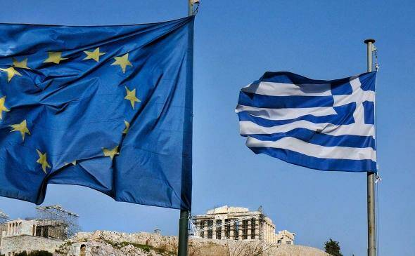

Греция выступает за расследование и выявление доказательств обхода санкций против России, а также требует исключить греческие компании из украинского списка «спонсоров войны», пишет издание.К Венгрии, власти которой публично критиковали проект 11-го пакета санкций ЕС против России, присоединилась Греция, пишет Poliico со ссылкой на пять дипломатических источников. Будапешт и Афины для согласования новых ограничительных мер против Москвы требуют исключения своих компаний из списка «спонсоров войны», составленный Украиной, отмечает издание.
ЕС обсуждает 11-й пакет санкций против России с начала весны. По задумке Брюсселя, он будет нацелен на предотвращение обхода действующих ограничительных мер и наказание тех, кто их нарушает, говорили в Еврокомиссии.
Как утверждают источники Politico, Венгрия и Греция «вставляют палки в колеса» коллективного согласования санкций и используют их «в качестве политического рычага» для исключения своих компаний из списка «спонсоров войны», составленный Украиной (туда включены пять греческих компаний и одна венгерская, которые, как утверждают составители перечня, несмотря на санкции, продолжают сотрудничать с Россией).